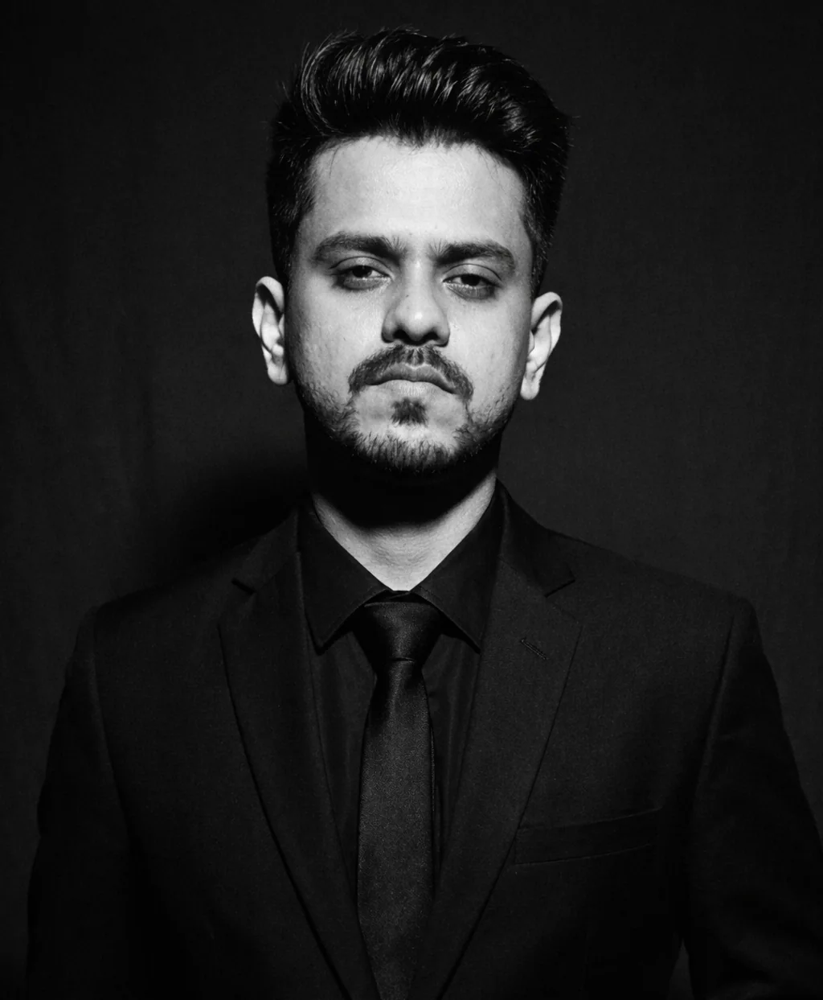

Search Engine Optimization
Keyword research, SEO audits, on-page optimization, technical SEO and competitor analysis.
HEY, I'M TOKY
I'm Md. Sadiqur Rahman Toky, a digital marketer focused on helping brands show up, stand out, and connect through strategic SEO and social media marketing.

I work across search engine optimization, social media management, content creation, and marketing campaigns to create a stronger digital presence for the brands I work with.
My work brings together research, technical attention to detail, creative ideas, and practical execution — from keyword research and website audits to campaign content and tracking setup.
MORE ABOUT MY EXPERTISEResearch-led thinking. Creative execution. An eye on how it all connects.
Keyword research, SEO audits, on-page optimization, technical SEO and competitor analysis.
Content strategy, editorial planning, platform optimization, creative content and publishing.
Social media advertising campaigns, Meta Pixel setup and data-informed marketing workflows.
Content writing, visual ideas, AI-assisted image creation, e-commerce research and storytelling.
Real examples from SEO research, website optimization, content planning and social media design.
Project images are taken from the work samples provided in my portfolio documentation. Select a project to explore its gallery.
A mix of technical marketing skills, creativity and a willingness to keep learning.
HAVE A PROJECT IN MIND?
Have a question, a project or an idea worth exploring?
I'd love to hear about it.